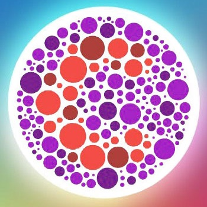

Give the Red-Green Color Blindness Test here
This a test based on the standard Ishihara plates allowing you to understand the extent of red-green deficiency you have.
Start

Give the Blue Color Blindness Test here
This is a test based on the C-gap method allowing you to understand the extent of blue color deficiency you have.
Start
What Do Color-Blind People See?
Adjust the colors for an uploaded image allowing a normal vision user to view the image from the color-blind person’s perspective.
Start
Which Color Is This?
A simple color picker extension. Easily pick any color on the screen, view a history of picked colors, and copy or clear them with a single click.
Start